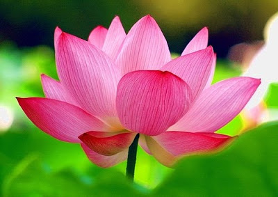

National Flower
- Name : Indian Lotus,Kamal,Padma,Scared Lotus
- Scientific Name : Nelumbo nucifera
- Adopted in : 1950
- Found in : Native to South Eastern Asian countries; cultivated in Australia, Europe, Japan and America.
- Habitat : Stationary water bodies like ponds, lakes and artificial pools.
- Average Dimensions : 1.5 cm long; horizontal spread of 3 m
- Average Diameter : Leaves – 0.6 m; flowers – 0.2 m
- Average Number of Petals : 30
The national flower of a country should tie in with the culture, history and heritage of a nation. It is meant to reinforce the country’s image to the world and play a part in upholding the qualities that the nation holds true. The national flower of India is Lotus. It is an aquatic herb that is often termed as ‘Padma’ in Sanskrit and enjoys a sacred status among the Indian culture. It has been an integral part of the Indian culture from time immemorial. A prominent feature of the Indian mythology, the lotus is one with the Indian identity and represents the core values of Indian psyche.
The Lotus symbolizes spirituality, fruitfulness, wealth, knowledge and illumination. The most important thing about lotus is that even after growing in murky water it is untouched by its impurity. On the other hand the lotus symbolizes purity of heart and mind. The National Flower 'Lotus' or water lily is an aquatic plant of Nymphaea species with broad floating leaves and bright aromatic flowers that grow only in shallow waters. The leaves and flowers of the Lotus float and have long stems that contain air spaces in them. The lotus flowers have many petals overlapping in a proportional pattern. The root functions of lotus are carried out by rhizomes that fan out horizontally through the mud below the water. Lotuses, cherished for their tranquil beauty, are delightful to take a look at as their blossoms open on the pond's surface.
Scientific Classification
- Kingdom : Plantae
- SubKingdom : Viridiplantae
- Superdivision : Embryophyta
- Division : Tracheophyta
- Subdivision : Spermatophytina
- Class : Magnoliopsida
- Superorder : Proteanae
- Order : Proteales
- Family : Nelumbonaceae
- Genus : Nelumbo
- Species : Nelumbo nucifera
Distribution
Nelumbo nucifera or the Indian Lotus is native to Eastern Asia although its distribution ranges throughout the world in semi-tropical climate condition. It is predominant in the Indian subcontinent including India, Bangladesh, and Myanmar; but also very common in other south-east Asian countries like Bali, Indonesia, Malaysia etc. It is cultivated in Australia as well as in European countries for its aesthetic value. It is also found in Tropical parts of America.
Description
The lotus stem remains underground in the muddy soil at the bottom of the inhabiting water body. It modifies into a structure known as the rhizome which serves as both an anchoring device and storage organ. Roots are short and fibrous growing out in bunches from the stem internodes.
The lotus plants have simple leaves meaning one per leaf stalk. The stalks emerge upwards from the rhizomatous stem - are green, long, round and hollow. The stalks grow around 2-3 cm higher than the surface of the water holding up the flowers and leaves. The vasculature is porous enabling the stems and stalks to remain afloat in water. The upper surface of the leaves is waxy and impervious to water.
The flowers are the key focus of the plant, and are large and showy, predominantly pink or white in color. The cone shaped central female reproductive structure is termed the thalamus which is framed by the delicate petals. The lotus bud resembles the shape of a tear-drop with pointy tip and tightly packed petals. The petals are translucent and open in overlapping spiral pattern. The flowers open in the morning and bloom for three days. The petals close after sunset trapping in the pollinating agents. The central yellow receptacle of the spongy thalamus contains the ovaries which develop into seeds after fertilization, and are embedded in single chambers along the surface.Seeds are hard, oval in shape and dark brown in color.
Cultivation Method
Lotus is cultivated throughout the world for the food value of the stems and rhizome as well as for the aesthetic value of the flowers. The plants are mostly propagated through seeds initially. The seeds are placed in damp soil and should be exposed to sunlight for at least 6 hours each day initially. Temperature of around 25-30°C should be maintained.
Uses
Apart from its aesthetic value, the entire lotus plant is of considerable economic and medicinal value as well. Every part of the plant is consumable. The petals are often used for ornamental purposes like garnishing. The mature leaves are often used for packaging as well as serving food. In India, serving food on a lotus leaf is considered beneficial for health. The rhizome and leaf stalks are used as vegetables in most East Asian countries like China, Korea and Indonesia. The rhizome is boiled, sliced and fried, used in salads, pickled in vinegar. It is rich in fiber, contains Vitamins like B1, B2, B6, and C, essential minerals like potassium, manganese, phosphorous and copper. The lotus seed are also quite popular as nuts and are often eaten raw. They may also be fried or dry roasted to produce a sort of popcorn known as phool makhana. Lotus seed paste is a common ingredient in Asian desserts like mooncakes, rice flour pudding and daifuku.